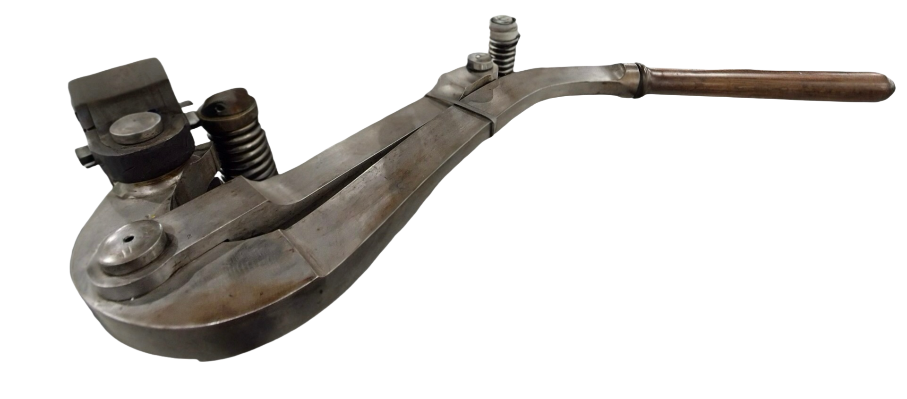

<!DOCTYPE html>
<html lang="en">
<head>
    <meta charset="UTF-8" />
    <title>Letterpress</title>
    <meta name="viewport" content="width=device-width, initial-scale=1.0" />
    <link rel="preconnect" href="https://fonts.googleapis.com">
    <link rel="preconnect" href="https://fonts.gstatic.com" crossorigin>
    <link href="https://fonts.googleapis.com/css2?family=Anton&family=IBM+Plex+Mono:wght@300;400;500&display=swap" rel="stylesheet">
    <link rel="stylesheet" href="style.css">
</head>
<body>
    <svg class="defs" width="0" height="0" aria-hidden="true">
        <defs>
            <filter id="ink-trace" x="-50%" y="-50%" width="200%" height="200%">
                <feFlood flood-color="rgb(8,14,36)" result="ink"/>
                <feMorphology in="SourceAlpha" operator="dilate" radius="0.5" result="s1"/>
                <feTurbulence type="fractalNoise" baseFrequency="0.7" numOctaves="2" seed="3" result="n1"/>
                <feDisplacementMap in="s1" in2="n1" scale="1.0" xChannelSelector="R" yChannelSelector="G" result="d1"/>
                <feGaussianBlur in="d1" stdDeviation="0.4" result="h1b"/>
                <feOffset in="h1b" dx="0.4" dy="-0.2" result="h1a"/>
                <feComposite in="ink" in2="h1a" operator="in" result="h1c"/>
                <feComponentTransfer in="h1c" result="h1">
                    <feFuncA type="linear" slope="0.25"/>
                </feComponentTransfer>
                <feMerge>
                    <feMergeNode in="h1"/>
                    <feMergeNode in="SourceGraphic"/>
                </feMerge>
            </filter>

            <filter id="ink-faint" x="-100%" y="-100%" width="300%" height="300%">
                <feFlood flood-color="rgb(8,14,36)" result="ink"/>
                <feMorphology in="SourceAlpha" operator="dilate" radius="1.2" result="s1"/>
                <feTurbulence type="fractalNoise" baseFrequency="0.55" numOctaves="2" seed="2" result="n1"/>
                <feDisplacementMap in="s1" in2="n1" scale="2.5" xChannelSelector="R" yChannelSelector="G" result="d1"/>
                <feGaussianBlur in="d1" stdDeviation="1.0" result="h1b"/>
                <feOffset in="h1b" dx="0.8" dy="-0.4" result="h1a"/>
                <feComposite in="ink" in2="h1a" operator="in" result="h1c"/>
                <feComponentTransfer in="h1c" result="h1">
                    <feFuncA type="linear" slope="0.55"/>
                </feComponentTransfer>
                <feMorphology in="SourceAlpha" operator="dilate" radius="2.5" result="s2"/>
                <feGaussianBlur in="s2" stdDeviation="3" result="h2b"/>
                <feOffset in="h2b" dx="-1.6" dy="1.2" result="h2a"/>
                <feComposite in="ink" in2="h2a" operator="in" result="h2c"/>
                <feComponentTransfer in="h2c" result="h2">
                    <feFuncA type="linear" slope="0.30"/>
                </feComponentTransfer>
                <feMerge>
                    <feMergeNode in="h2"/>
                    <feMergeNode in="h1"/>
                    <feMergeNode in="SourceGraphic"/>
                </feMerge>
            </filter>

            <filter id="ink-mild" x="-100%" y="-100%" width="300%" height="300%">
                <feFlood flood-color="rgb(8,14,36)" result="ink"/>
                <feMorphology in="SourceAlpha" operator="dilate" radius="2.0" result="s1"/>
                <feTurbulence type="fractalNoise" baseFrequency="0.45" numOctaves="2" seed="4" result="n1"/>
                <feDisplacementMap in="s1" in2="n1" scale="4.5" xChannelSelector="R" yChannelSelector="G" result="d1"/>
                <feGaussianBlur in="d1" stdDeviation="1.4" result="h1b"/>
                <feOffset in="h1b" dx="-1.2" dy="0.6" result="h1a"/>
                <feComposite in="ink" in2="h1a" operator="in" result="h1c"/>
                <feComponentTransfer in="h1c" result="h1">
                    <feFuncA type="linear" slope="0.70"/>
                </feComponentTransfer>
                <feMorphology in="SourceAlpha" operator="dilate" radius="4.5" result="s2"/>
                <feGaussianBlur in="s2" stdDeviation="4.5" result="h2b"/>
                <feOffset in="h2b" dx="2.5" dy="1.5" result="h2a"/>
                <feComposite in="ink" in2="h2a" operator="in" result="h2c"/>
                <feComponentTransfer in="h2c" result="h2">
                    <feFuncA type="linear" slope="0.40"/>
                </feComponentTransfer>
                <feMerge>
                    <feMergeNode in="h2"/>
                    <feMergeNode in="h1"/>
                    <feMergeNode in="SourceGraphic"/>
                </feMerge>
            </filter>

            <filter id="ink-medium" x="-120%" y="-120%" width="340%" height="340%">
                <feFlood flood-color="rgb(8,14,36)" result="ink"/>
                <feMorphology in="SourceAlpha" operator="dilate" radius="3.0" result="s1"/>
                <feTurbulence type="fractalNoise" baseFrequency="0.35" numOctaves="3" seed="6" result="n1"/>
                <feDisplacementMap in="s1" in2="n1" scale="7" xChannelSelector="R" yChannelSelector="G" result="d1"/>
                <feGaussianBlur in="d1" stdDeviation="2.2" result="h1b"/>
                <feOffset in="h1b" dx="1.8" dy="-1.0" result="h1a"/>
                <feComposite in="ink" in2="h1a" operator="in" result="h1c"/>
                <feComponentTransfer in="h1c" result="h1">
                    <feFuncA type="linear" slope="0.85"/>
                </feComponentTransfer>
                <feMorphology in="SourceAlpha" operator="dilate" radius="7" result="s2"/>
                <feGaussianBlur in="s2" stdDeviation="6.5" result="h2b"/>
                <feOffset in="h2b" dx="-3.5" dy="2.5" result="h2a"/>
                <feComposite in="ink" in2="h2a" operator="in" result="h2c"/>
                <feComponentTransfer in="h2c" result="h2">
                    <feFuncA type="linear" slope="0.50"/>
                </feComponentTransfer>
                <feMerge>
                    <feMergeNode in="h2"/>
                    <feMergeNode in="h1"/>
                    <feMergeNode in="SourceGraphic"/>
                </feMerge>
            </filter>

            <filter id="ink-heavy" x="-140%" y="-140%" width="380%" height="380%">
                <feFlood flood-color="rgb(8,14,36)" result="ink"/>
                <feMorphology in="SourceAlpha" operator="dilate" radius="4.5" result="s1"/>
                <feTurbulence type="fractalNoise" baseFrequency="0.28" numOctaves="3" seed="8" result="n1"/>
                <feDisplacementMap in="s1" in2="n1" scale="11" xChannelSelector="R" yChannelSelector="G" result="d1"/>
                <feGaussianBlur in="d1" stdDeviation="3.2" result="h1b"/>
                <feOffset in="h1b" dx="-2.0" dy="1.4" result="h1a"/>
                <feComposite in="ink" in2="h1a" operator="in" result="h1c"/>
                <feComponentTransfer in="h1c" result="h1">
                    <feFuncA type="linear" slope="0.95"/>
                </feComponentTransfer>
                <feMorphology in="SourceAlpha" operator="dilate" radius="10" result="s2"/>
                <feGaussianBlur in="s2" stdDeviation="9" result="h2b"/>
                <feOffset in="h2b" dx="4.5" dy="-3.0" result="h2a"/>
                <feComposite in="ink" in2="h2a" operator="in" result="h2c"/>
                <feComponentTransfer in="h2c" result="h2">
                    <feFuncA type="linear" slope="0.60"/>
                </feComponentTransfer>
                <feMerge>
                    <feMergeNode in="h2"/>
                    <feMergeNode in="h1"/>
                    <feMergeNode in="SourceGraphic"/>
                </feMerge>
            </filter>

        </defs>
    </svg>

    <main class="shop">
        <section class="bed" id="bed">
            
            <div class="form-area">
                <div id="lockedType" class="locked-type"></div>
                <div id="paperStack" class="paper-stack"></div>
            </div>
        </section>

        <aside class="workspace">
            <header class="workspace-header">
                <span class="ws-eyebrow">interpretative interface</span>
                <h1 class="ws-title">Letterpress</h1>
                <p class="ws-sub">Drag tokens into the stick. Pull the lever. Flip the twelve sheets to observe each layer.</p>
            </header>

            <div class="ws-section ws-section--pool">
                <div class="ws-label">tokens</div>
                <div class="token-pool" id="tokenPool"></div>
            </div>

            <div class="ws-section ws-section--stick">
                <div class="ws-label">composing stick</div>
                <div class="composing-stick" id="composingStick">
                    
                    <div class="stick-tray" id="stickTray"></div>
                </div>
            </div>

            <div class="ws-section ws-section--lever">
                <div class="ws-label">pull to print</div>
                <button class="lever" id="leverBtn" type="button" aria-label="pull to print">
                    
                </button>
            </div>
        </aside>
    </main>

    <script src="app.js"></script>
</body>
</html>
